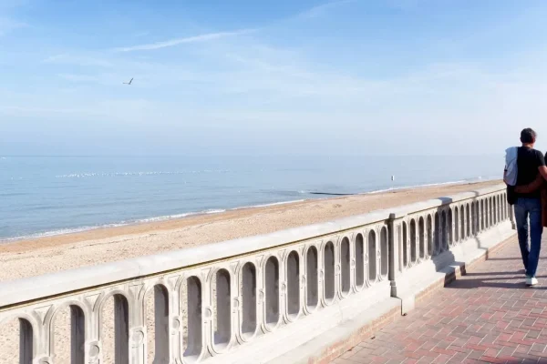
Balade
Promenade Marcel Proust
Une promenade emblématique le long du front de mer de Cabourg.
Entre plage, villas Belle Époque et promenade Marcel Proust
Présentation
Station balnéaire emblématique de la Côte Fleurie, Cabourg séduit par sa longue plage de sable, ses villas Belle Époque et son atmosphère paisible. Entre promenade en bord de mer, centre-ville et patrimoine, la ville se découvre facilement à pied.
À ne pas manquer

Une promenade emblématique le long du front de mer de Cabourg.
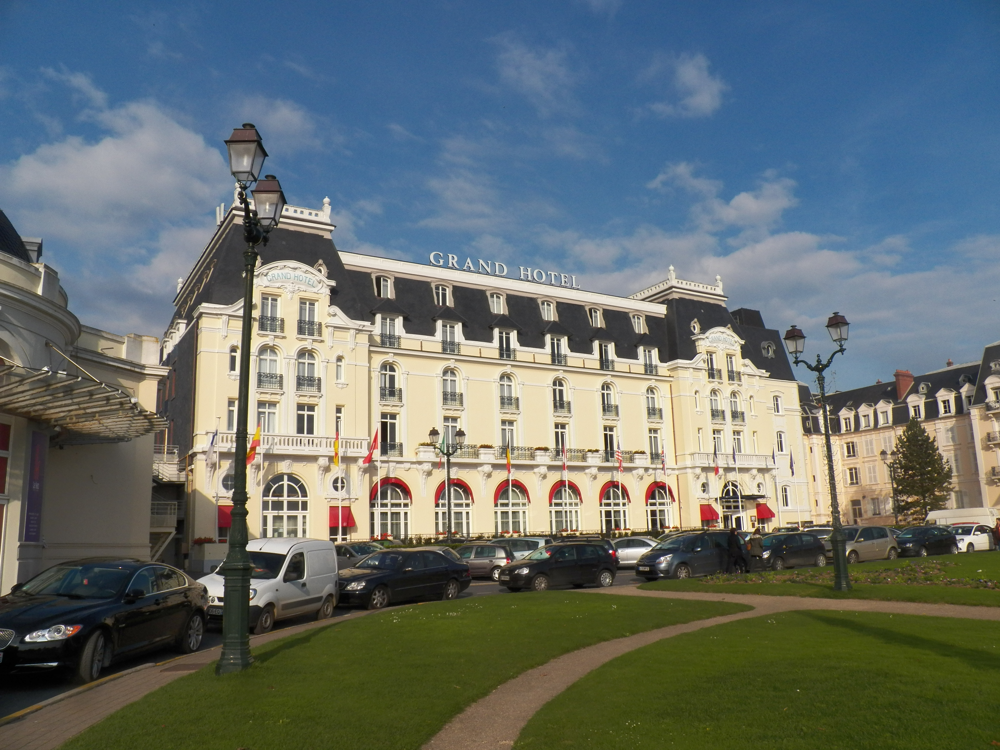
Un édifice emblématique de la station balnéaire et de son histoire.
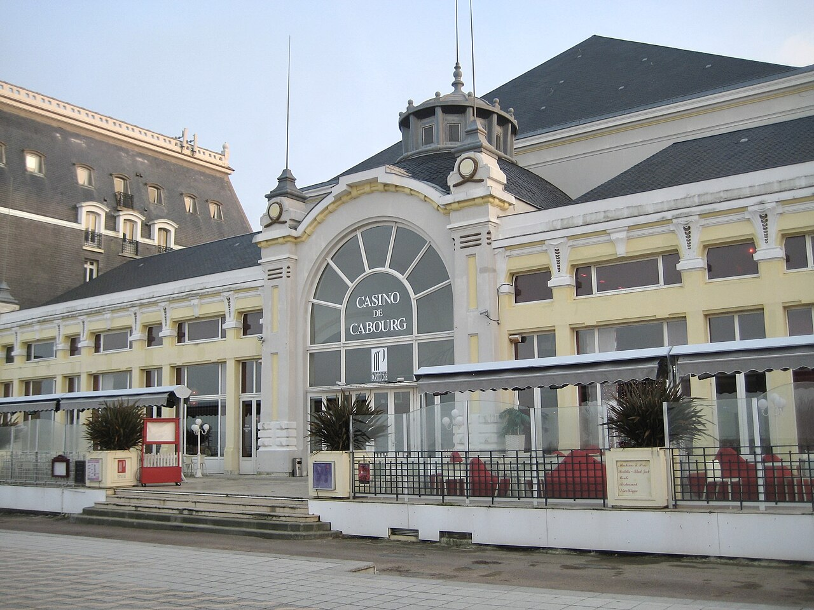
Face à la mer, cet édifice emblématique de Cabourg témoigne de l'histoire balnéaire de la ville.
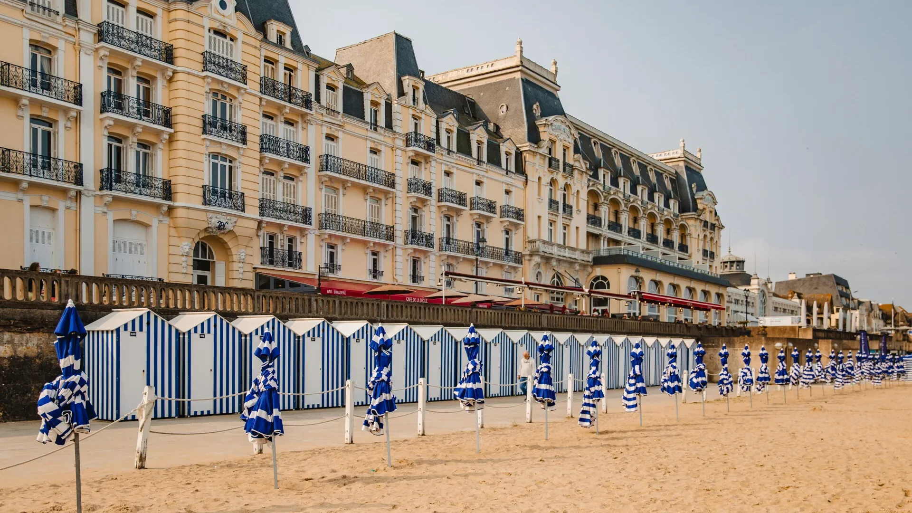
Une longue plage de sable idéale pour profiter du bord de mer.
Saveurs
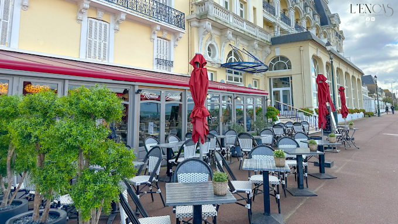
Une brasserie conviviale face à la mer, idéale pour profiter d’un repas avec vue sur la Promenade Marcel Proust.
Découvrir l'adresse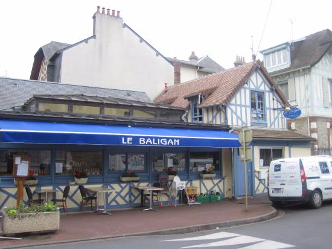
Une adresse incontournable pour savourer poissons, coquillages et fruits de mer dans une ambiance chaleureuse.
Découvrir l'adresse →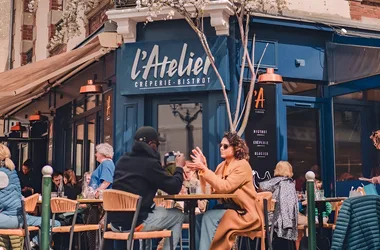
Une table conviviale proposant une cuisine française soignée au cœur de Cabourg.
Découvrir l'adresse →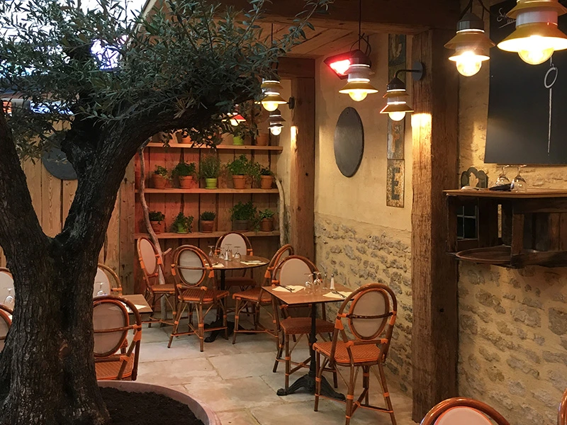
Une adresse appréciée pour ses pizzas et sa cuisine italienne, parfaite pour un repas décontracté.
Découvrir l'adresseÀ faire
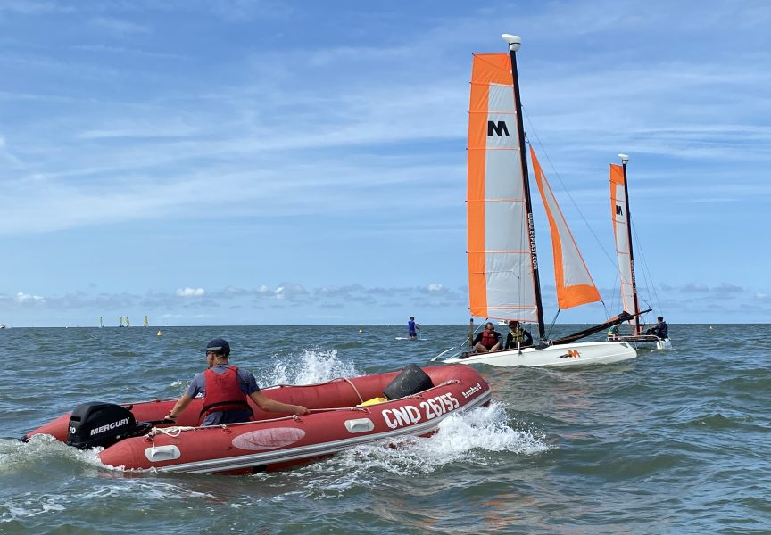
Voile, char à voile, paddle et autres activités pour profiter pleinement du littoral.
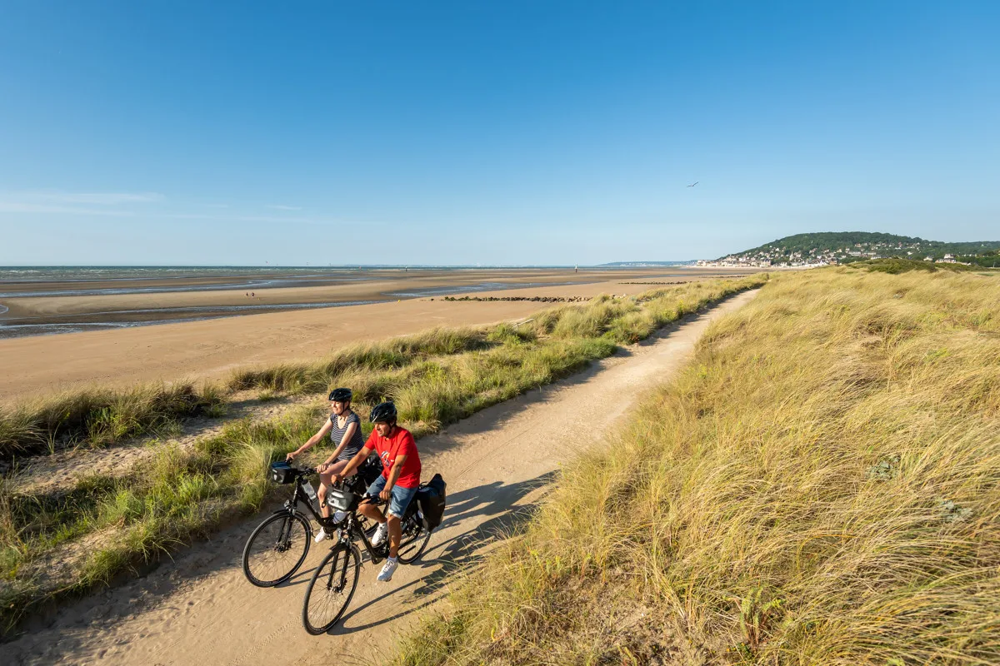
Parcourez le littoral et les environs de Cabourg à vélo.
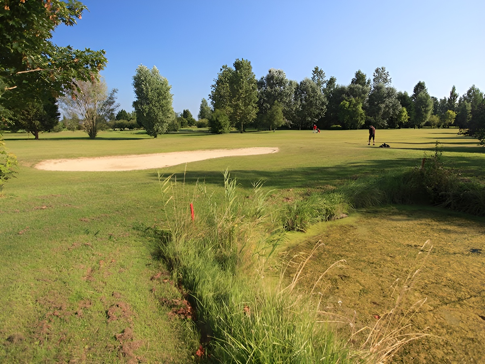
Profitez d'une partie de golf dans un cadre naturel entre terre et mer.
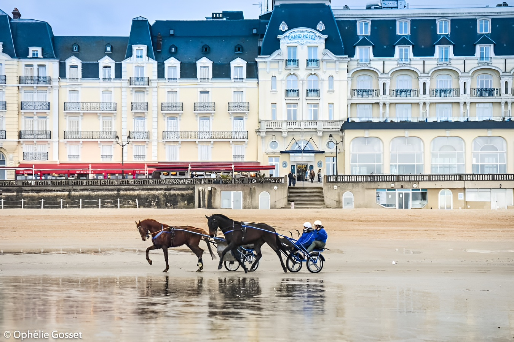
Découvrez l'univers équestre de Cabourg, entre balades cheval et courses hippiques.
Coups de cœur
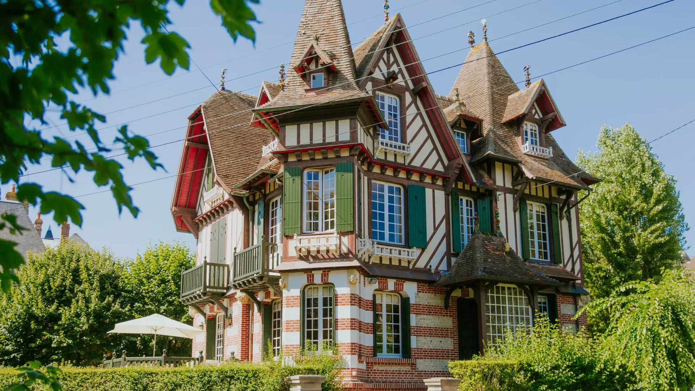
Découvrez l'architecture unique des villas Belle Époque qui font le charme de Cabourg.
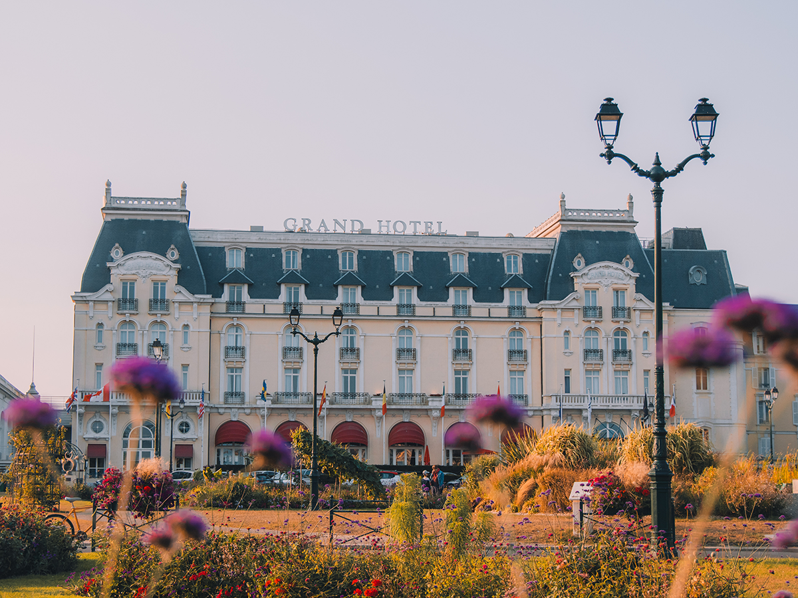
Un agréable écrin de verdure face à la mer, idéal pour une pause au cœur de Cabourg.je
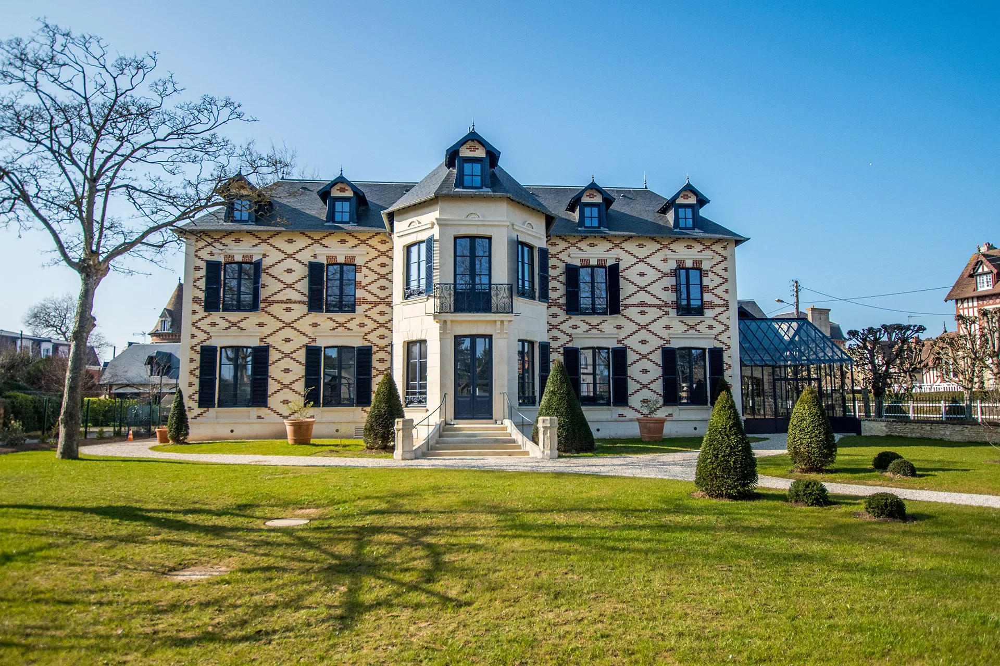
Profitez de la vie nocturne de Cabourg, entre bars, concerts et animations estivales.
Explorez Cabourg